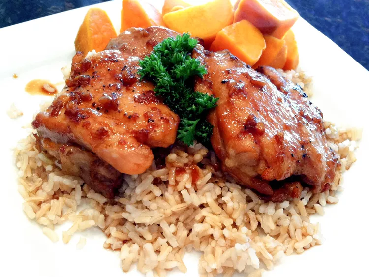

Grilled Chicken Adobo

This is a very tasty and easy-to-make Filipino chicken dish made with soy sauce, garlic, and vinegar.
I can just as easily double or triple the chicken in this recipe to serve guests at a party. Serve over
rice with just a little of the sauce (not too much).
Ingredients
- 1 ½ cups soy sauce
- 1 ½ cups water
- ¾ cup vinegar
- 3 tablespoons honey
- 1 ½ tablespoons minced garlic
- 3 bay leaves
- ½ teaspoon black pepper
- 3 pounds skinless, boneless chicken thighs
Steps
- Preheat an outdoor grill for high heat, and lightly oil grate.
- In a large pot, mix soy sauce, water, vinegar, honey, garlic, bay leaves,
and pepper. Bring the mixture to a boil, and place the chicken into the pot.
Reduce heat, cover, and cook 35 to 40 minutes.
- Remove chicken, drain on paper towels, and set aside. Discard bay leaves.
Return the mixture to a boil, and cook until reduced to about 1 1/2 cups.
- Place chicken on the prepared grill, about 5 minutes on each side, until
browned and crisp. Serve with the remaining soy sauce mixture.